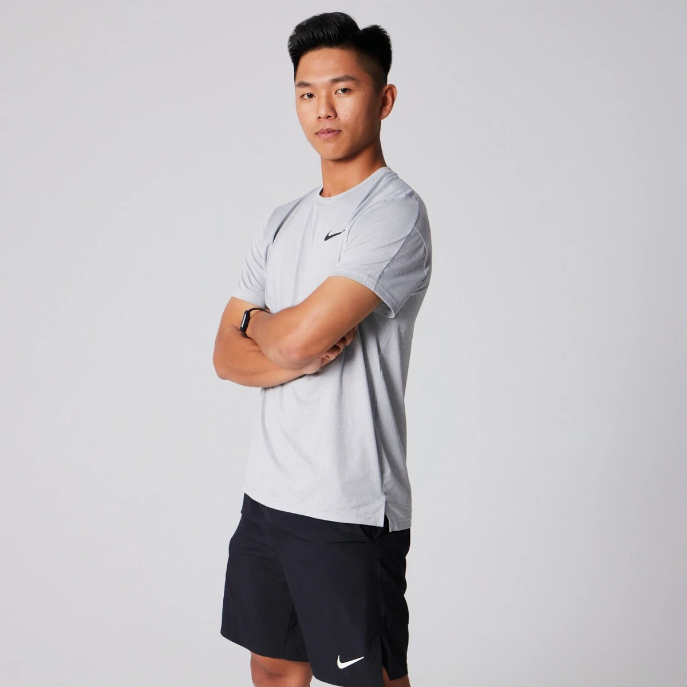

Coach
Introduction
Introduction
葉博文 Gary
專業證照
- NSCA-CSCS
- XPORTS 運動表現專家
- 怪獸訓練 肌力與體能教練
- 中華民國棒球協會 棒球教練
經歷
- 中信兄弟二軍 體能教練
- 臺體女壘隊 運動表現統籌教練
- 彰藝棒球隊 肌力與體能統籌教練
- 中一中棒球隊 肌力與體能教練
- 台灣體大 運動健康科學系

畢業於國立臺灣體育運動大學運動健康科學學系，取得 NSCA-CSCS 肌力與體能專家認證。曾在職業棒球、大學與高中球隊擔任體能與運動表現教練，也服務過帕拉林匹克運動員與網球選手，並擔任中華棒協 C 級棒球教練講習會講師。
創立 CoachGary Performance，是希望讓更多基層與學生運動員，也能接觸到系統化、有依據的訓練方法，不再只靠經驗與感覺練習。
從職業棒球到學校球隊、帕拉林匹克運動員，持續在場上累積經驗，也持續進修。
個人運動員、球隊與學校都歡迎洽詢。